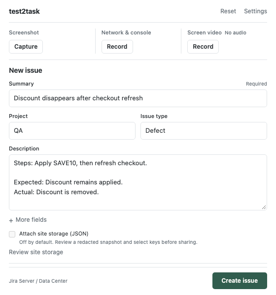
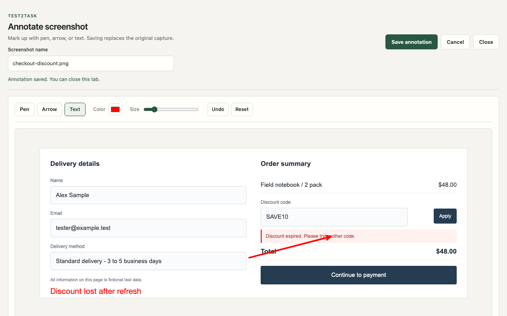
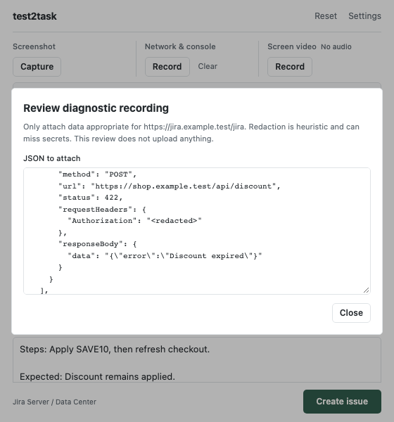

CHROME EXTENSION / FOR QA AND DEVELOPERS
Report the bug.
Keep the context.
test2task captures evidence from the page you are testing and creates a Jira Server/Data Center issue with the screenshots, logs, or video you choose to include.
No separate capture app. No developer-operated upload server. You review the report before sending it to your Jira.

THE WORKFLOW
From a reproduction
to a useful report.
Capture only what helps explain the problem. Screenshots, logs, video, and site storage are optional.
-
Connect your Jira
In Settings, enter your final HTTPS Jira URL, authentication, project, and issue type. Test the connection and save your defaults.
Connection setup guide -
Capture the finding
Take a screenshot of the visible tab, record network/console activity, or record tab video without audio. Start and stop recordings yourself.
-
Add context and review
Write the summary and description. Annotate or rename screenshots. Remove screenshots you do not want to attach; explicitly select any logs or video to include.
-
Create the issue
Send the report to your configured Jira and open the returned issue link. If an attachment fails, the issue may already exist: check that link before creating another.
MAKE IT EASY TO INVESTIGATE
Show what happened.
One report can combine the visual result with the technical context.

- Screenshots
- Capture the visible tab, add pen marks, arrows, or text, and rename the PNG before uploading.
- Network and console logs
- Record requests, responses, warnings, errors, and exceptions. Review or download the diagnostic JSON before attaching it.
- Tab video
- Record the active tab without audio. Preview or download the video, or export a GIF. No desktop-wide recording or video editing.
- Structured reports
- Use description templates and defaults, then load additional Jira-required fields when your project needs them.
REVIEW BEFORE SHARING
Useful evidence.
Deliberate sharing.
Captured pages and diagnostics can include credentials or personal information. test2task gives you review controls, not a guarantee that every secret has been removed.
- Recording is user-initiated. The first-use disclosure explains what is captured. You can remember approval separately for logs and video; Record is still required each time.
- Diagnostics are reviewable. Heuristic redaction masks likely credentials in JSON, URLs, headers, and console messages. Inspect the result before sharing.
- Site storage starts off. Request a redacted snapshot and select individual keys. Submission uses that reviewed snapshot without silently collecting a new one.
- Your Jira receives the report. Selected evidence goes to your configured HTTPS Jira. Uploaded content follows your Jira instance's access and retention rules.

COMMON QUESTIONS
Before your first capture.
Does it support Jira Cloud?
Not in this release. The supported integration is Jira Server/Data Center. Cloud support is planned, but its authentication and distribution requirements are not yet resolved. Do not rely on a Cloud API token as proof of supported compatibility.
What happens when I close the popup?
Active log and video recordings continue. Reopen test2task and press Stop, or clear/reset the recording when finished. Closing the popup does not delete saved evidence. Review the recording before selecting it for upload.
Why does Chrome ask for debugging access?
The debugger permission enables network and console recording. Chrome does not allow it to be optional, but test2task attaches the debugger only when you start log recording. Installation does not start a recording. Site-storage review requests its separate scripting permission when used.
What gets attached to the issue?
Screenshots remaining in your report are attached. Logs, video, and exported GIFs must be selected explicitly. Site storage is off until you request a snapshot, review it, and choose keys. Review the summary and description too: they can contain page context you have entered or opted to include.
Are there recording or attachment limits?
Video captures the active tab only, without audio. Screenshots capture its visible area. The extension limits each attachment to 10 MB, and Jira may impose a lower limit. Larger videos are not split into unplayable fragments; download the complete recording or make a shorter one.
Does the developer receive my Jira reports?
There is no developer-operated evidence upload or analytics server. Jira API requests go to your configured HTTPS Jira endpoint, and selected evidence is uploaded when you create an issue. Settings and credentials are stored locally in Chrome, which is not an encrypted credential vault. The public documentation and support tracker are hosted by GitHub; do not post private evidence in support issues.